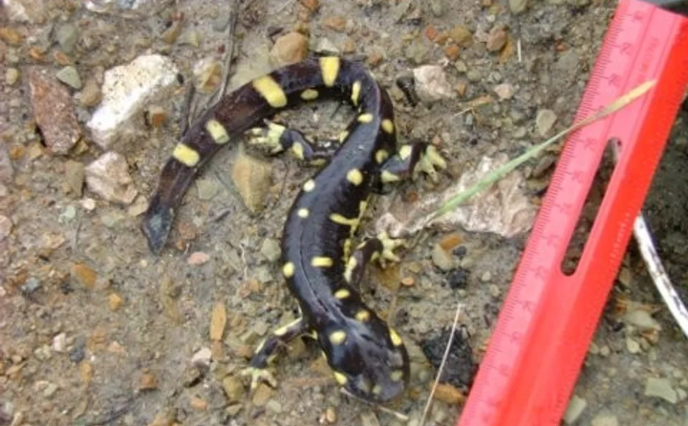
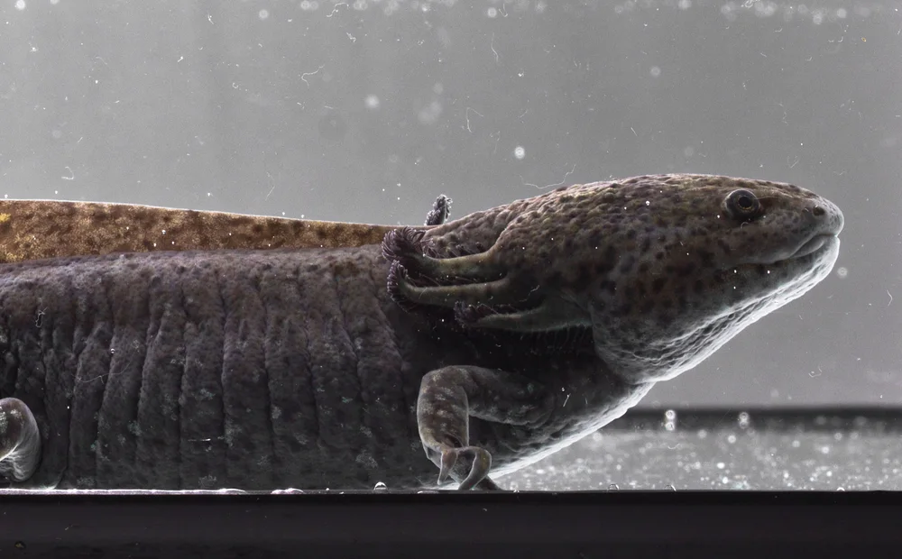
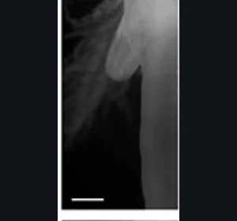

Key Term
Neoteny
Neoteny means an organism keeps juvenile features even after it can reproduce. In axolotls, the most visible example is keeping external gills instead of completing a typical land-adapted salamander transformation.
Life Sciences · Lesson 04
The Smiling Salamanders
Axolotls are salamanders that usually keep juvenile traits into adulthood. That pattern, called neoteny, lets them stay aquatic, keep feathery external gills, and live with a body plan unusually ready for repair.
Use the axolotl's body to gather evidence: juvenile traits can be useful adult adaptations.
3D model: Axolotl by varin, CC BY 4.0
24/7 Class Pet
Noodle keeps swimming after class ends. Feed the same class axolotl from any device, earn community points together, and unlock new tank surprises as the total grows.
Key Term
Neoteny means an organism keeps juvenile features even after it can reproduce. In axolotls, the most visible example is keeping external gills instead of completing a typical land-adapted salamander transformation.
Adaptation
In the lake environments where axolotls evolved, staying in water can be an advantage. Their gills and tail fin fit an aquatic lifestyle, so "not growing out of it" becomes a survival strategy.
Repair
Axolotls can regrow complex tissues, including limbs, parts of the tail, and some organs. Scientists study them because their healing response rebuilds structure instead of simply sealing damage with scar tissue.
Compare
Many amphibians change dramatically as they mature. Axolotls show a different path: adulthood with larval features. Compare the real animals, then use the slider to focus the evidence.

Relative after metamorphosisA California tiger salamander shows traits common in land-oriented adults after metamorphosis.
Photo: Pacific Southwest Region USFWS, public domain.

Adult + juvenile traitsAdult axolotls usually stay in water while retaining the external gills and finned tail seen in larvae.
Photo: Mariblubb, CC BY-SA 4.0; cropped.
Read this comparison carefully: these are related species, not before-and-after photographs of one animal. The photographs show two different adult strategies within the mole salamander family.
From the Wild
Axolotls are native to the lake and canal system around Xochimilco in Mexico City. Their aquatic lifestyle makes more sense when you picture this freshwater habitat: shallow water, plants, canals, and places to hide.
That habitat is also part of the conservation story. Wild axolotls are critically endangered because of habitat loss, pollution, and invasive species. Protecting the place protects the animal.


Regeneration Lab
Regeneration is not magic. It is organized biology: cells respond to injury, form a growth zone, rebuild missing structures, and reconnect tissues. Step through photographs from a published axolotl study.

Research images: cropped from Figure 1A in Hu et al., Frontiers in Genetics (2022), CC BY 4.0. “dpa” means days post-amputation. The images show a control animal; crops preserve the original scale bars where present.
Evidence Table
| Feature | Juvenile trait | Adult advantage | Scientific caution |
|---|---|---|---|
| External gills | Feathery gills remain outside the head. | They help the animal breathe while staying in water. | Neoteny is not "refusing to grow up"; it is a developmental pattern shaped by biology and environment. |
| Tail fin | A larval-style fin remains useful. | It supports swimming and aquatic movement. | Adaptations are tradeoffs. What helps in water may not help on dry land. |
| Regenerative capacity | Repair systems remain unusually flexible. | Complex tissues can regrow after injury. | Humans cannot copy axolotl regeneration by mindset alone; this is an active research area. |
Human Connection
Humans do not stay biologically juvenile. We grow, age, and can become physically frail. But the axolotl gives us a useful metaphor: some youthful qualities are not weaknesses. Curiosity, play, flexible attention, and a beginner's mind can keep learning alive even as the body changes.
Ask one more question before deciding you already understand. Curiosity turns stress into investigation.
Try a small experiment without needing it to be perfect. Play is practice with the fear turned down.
Release a trivial fixation for a moment and look again. A fresh mind sees options a tense mind misses.
Discuss
.jpg){kind=link}
{kind=link}